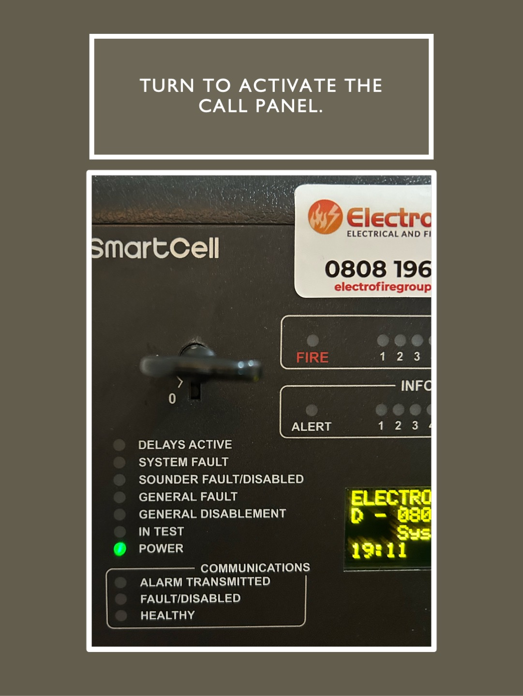
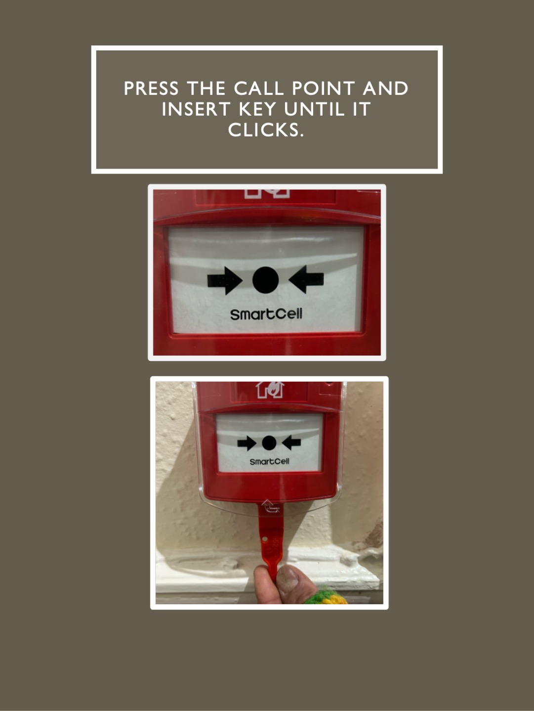
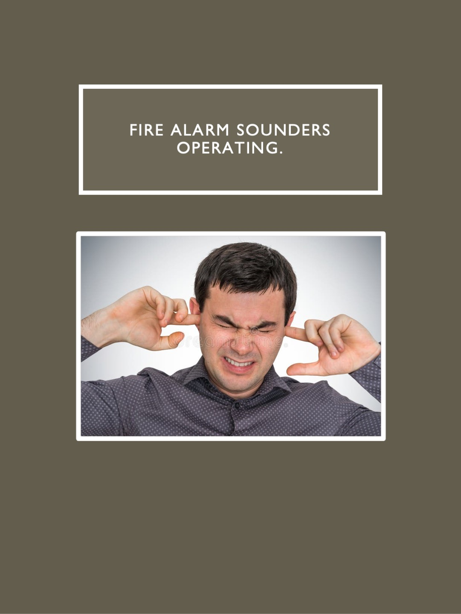
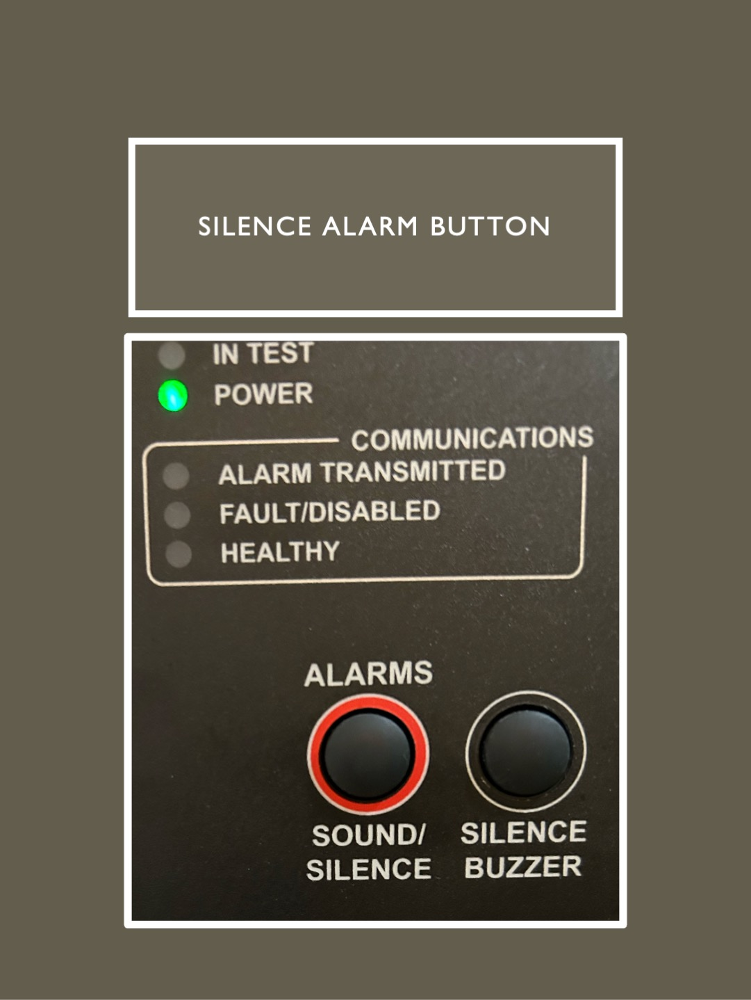
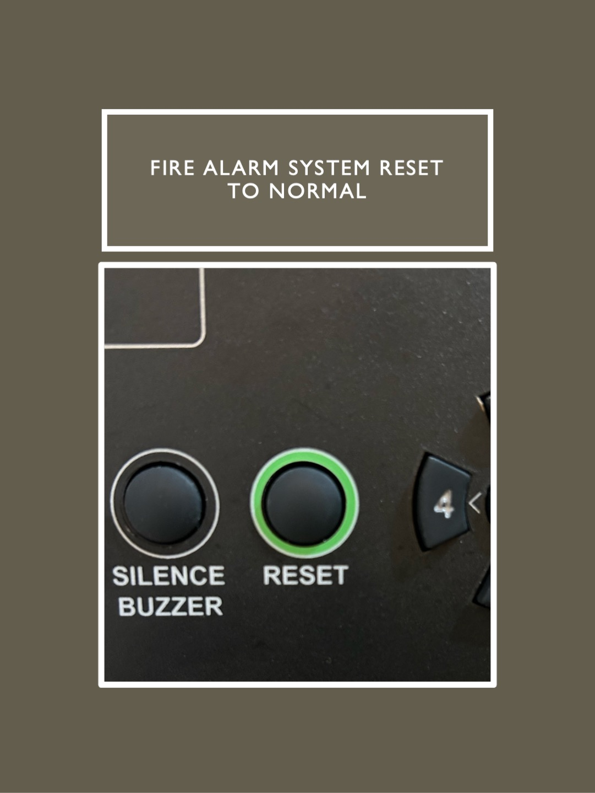
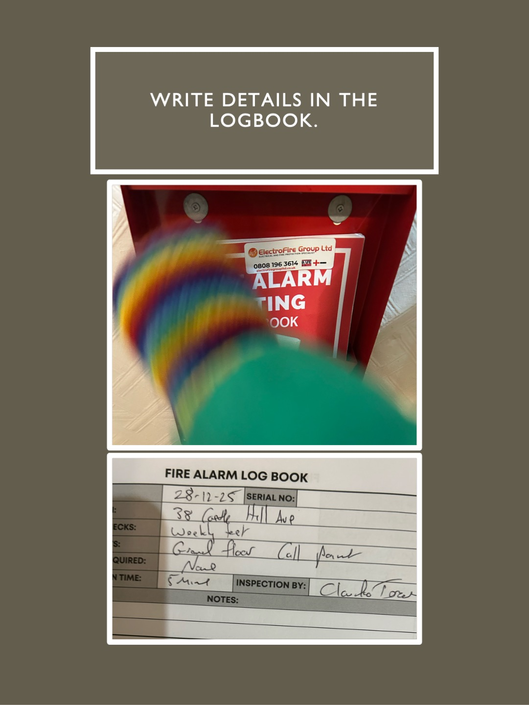

INITIALISE
Turn the key from vertical to horizontal to activate the panel.

ACTIVATE
1. Press the white panel on the call point until it clicks and a yellow tab will appear.
2. Insert the red call point key, in the bottom of the call point and push until it clicks and the yellow panel will disappear.

SIGNAL
Alarm sounds. Allow system to operate for approximately 20 seconds.

SILENCE
Press the silence alarm button once.

RESET
Press the reset button ( It may take a few seconds).

RECORD
Write details in the log book.
